PORTFOLIO
In diesem kleinen Portfolio kann man ein paar Arbeiten von mir finden
That's me :)
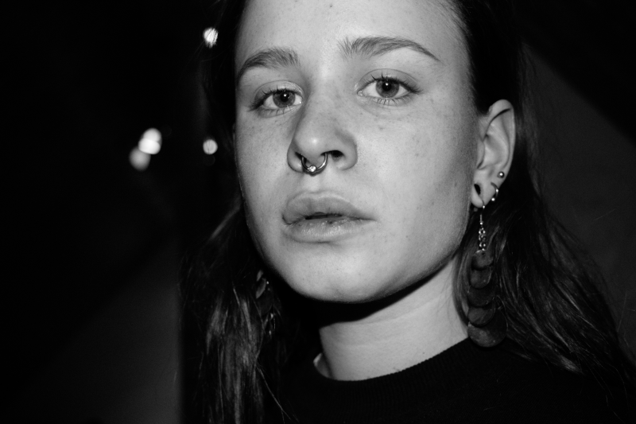
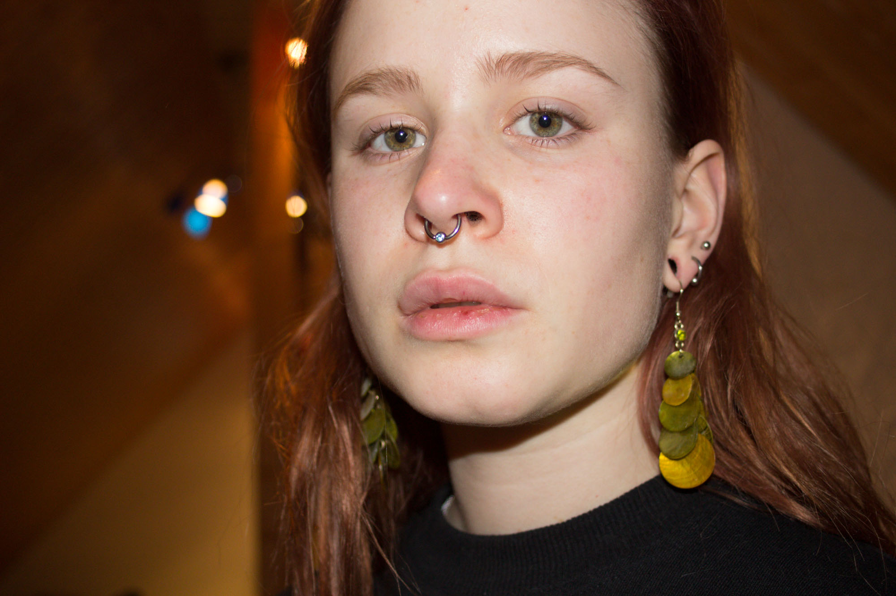
GRAFICS
Hier ein paar der Bilder die ich gemalt habe

Underwater
Pools of sorrow, waves of joy are drifting through my open mind ...
Pools of sorrow, waves of joy are drifting through my open mind ...

Annoyed Tree
Wenn im Wald mal wieder jemand rumsägt und du aber einfach nur die Natur genießen willst, uuuugh, so annoying
Wenn im Wald mal wieder jemand rumsägt und du aber einfach nur die Natur genießen willst, uuuugh, so annoying
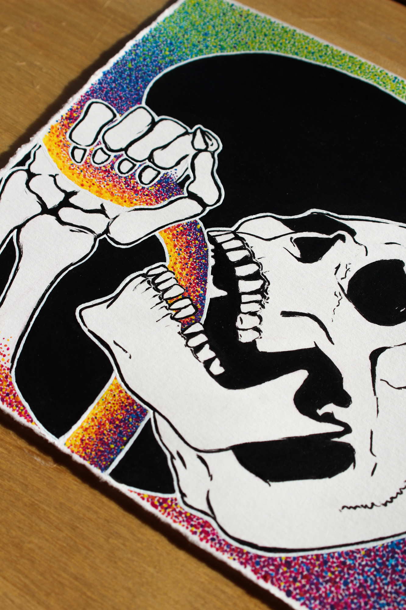
{kind=link}
Alcoholic
"Ich bin kein Alkoholiker, ich trinke nur am Wochenende"
"Ich bin kein Alkoholiker, ich trinke nur am Wochenende"

BeeDragon
Ein Drache mit flauschigem Bienenfell fliegt durch ein Lavendelfeld
Ein Drache mit flauschigem Bienenfell fliegt durch ein Lavendelfeld

Forestghost
Der allwissende Waldgeist weiß alles, deswegen zeigt er sich nie. Er will ja nicht im Labor landen
Der allwissende Waldgeist weiß alles, deswegen zeigt er sich nie. Er will ja nicht im Labor landen

Ein Tattoo, das ich für meinen Bruder designed habe. Der
"Batskull" ist das Logo
von
Avenged
Sevenfold , welches er schon tattowiert hatte.
Er hat es dann tatsächlich auch
durchgezogen!

RacoonCatBear
Ich mag Katzen und Waschbären und rote Pandas...- das ist die Mischung daraus
Ich mag Katzen und Waschbären und rote Pandas...- das ist die Mischung daraus
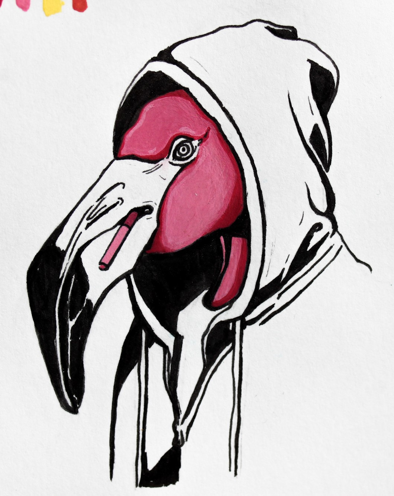
Gangster Flamingo
Der Gangster-Flamingo verkauft Drogen in schmuddeligen Spelunken. Er denkt, dass er cool aussieht wenn er raucht
Der Gangster-Flamingo verkauft Drogen in schmuddeligen Spelunken. Er denkt, dass er cool aussieht wenn er raucht

Alone Time
Das bin ich, wenn ich konzentriert versuche herauszufinden, ob die Noise-Cancelling Funktion meiner Kopfhörer überhaupt was bringt (Ich glaube nicht)
Das bin ich, wenn ich konzentriert versuche herauszufinden, ob die Noise-Cancelling Funktion meiner Kopfhörer überhaupt was bringt (Ich glaube nicht)

body sketches
sketches of somebody
sketches of somebody
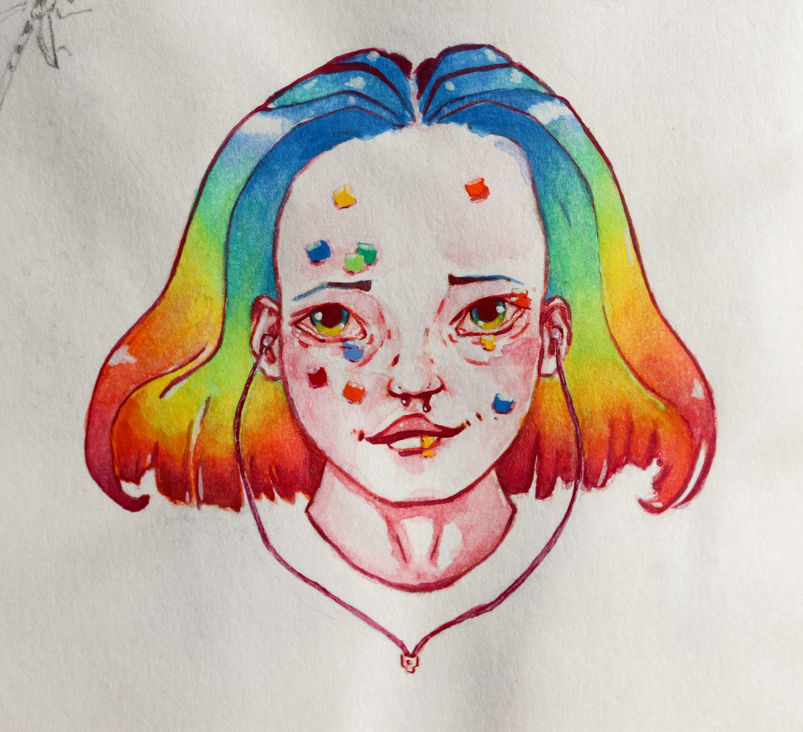
{kind=link}
LSD
Be openminded. Inspiriert von "Hallucinogenics" von Matt Mason
Be openminded. Inspiriert von "Hallucinogenics" von Matt Mason

bunny
lady
Eines meiner ersten digitalen Bilder, mit Krita gemalt.
Eines meiner ersten digitalen Bilder, mit Krita gemalt.
CODING STUFF
Im Rahmen meines Studiums konnte ich Erfahrungen in Typescript/Javascript und HTML/CSS sammeln. Hier ein paar Beispiele

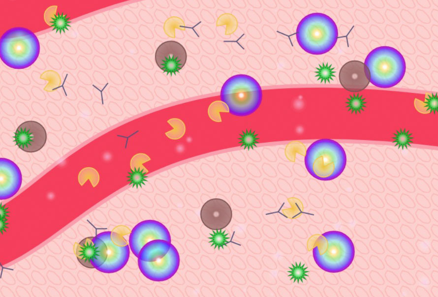
Corona Viren greifen Humanzellen an! (Ein wenig stilisiert natürlich)

Eine Haushaltshilfe-App
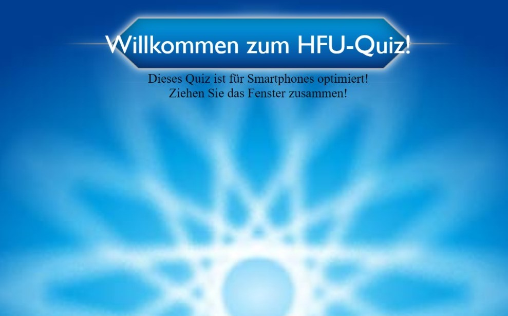
Ein kleines Quiz über das liebliche Furtwangen im
Schwarzwald , in
welchem ich Medienkonzeption
studiere
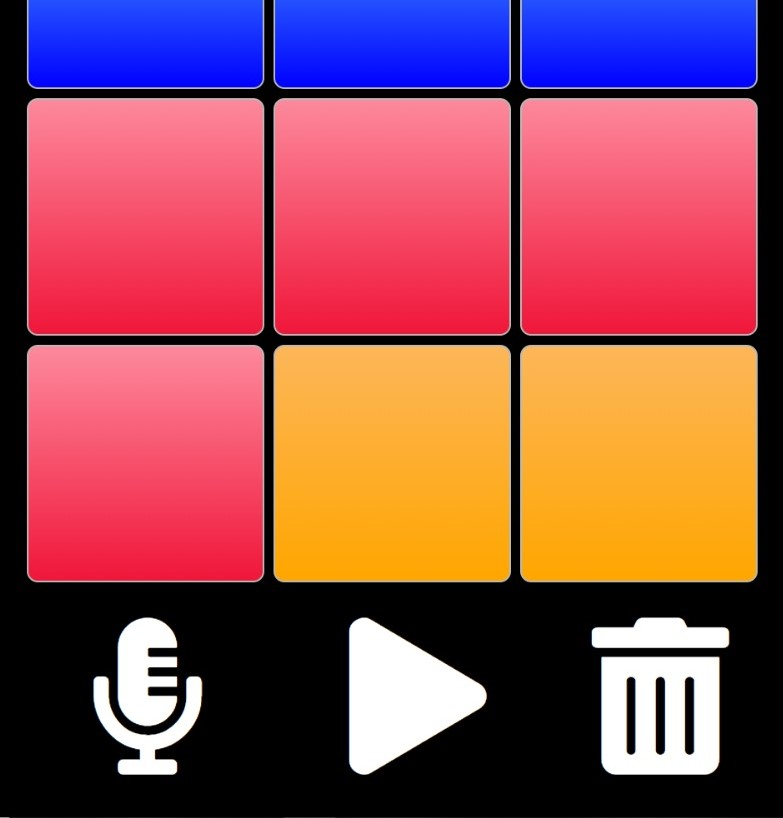
Ein Drumpad
BLENDER
Mit Blender habe ich auch schon Bekanntschaft gemacht :)
"Mouse Perspective"
Ein Film, den meine Gruppe und ich als Abschlussprüfung in dem Kurs Computergrafik abgegeben habenWas ich dabei gemacht habe:
Reh (Modellierung + Animation), Graspartikel + Boden, Marienkäfer (Modellierung +Teile der Animation), Musik unterlegt
(Musik darf ich aus rechtlichen Gründen leider nicht freigeben, man stelle sich Waldgeräusche vor)
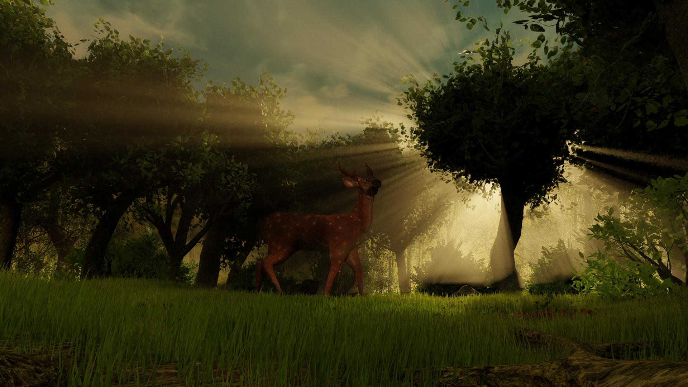

Konzept: Mouse Perspective
Weitere Teammitglieder: Ulla Herrmann, Sarah Weidenhiller, Niklas Krieg
Ein kleiner Fisch und ein kleines U-Boot
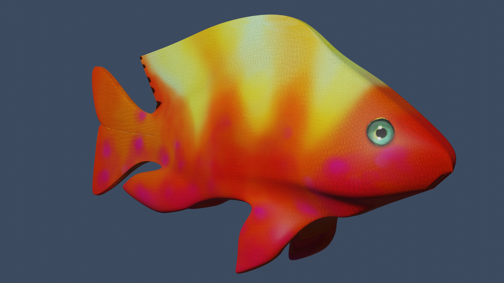Außerdem ein Logo, welches ich für ein Projekt im Rahmen des Kurses UXD erstellt habe
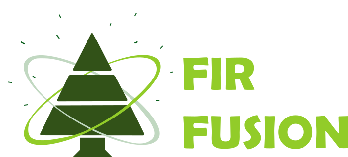